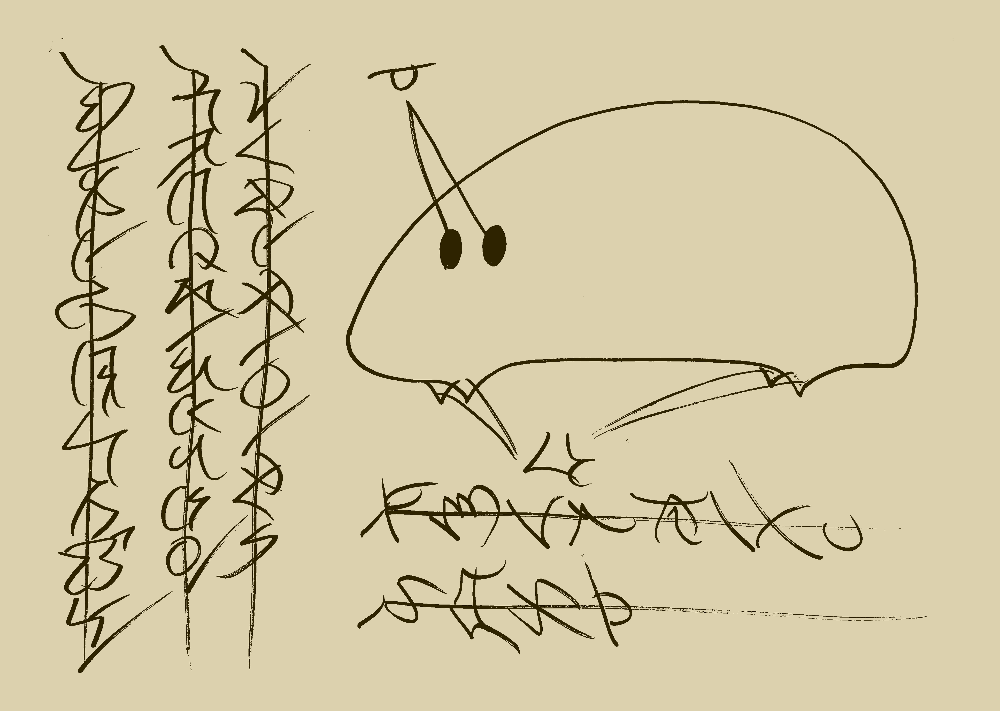
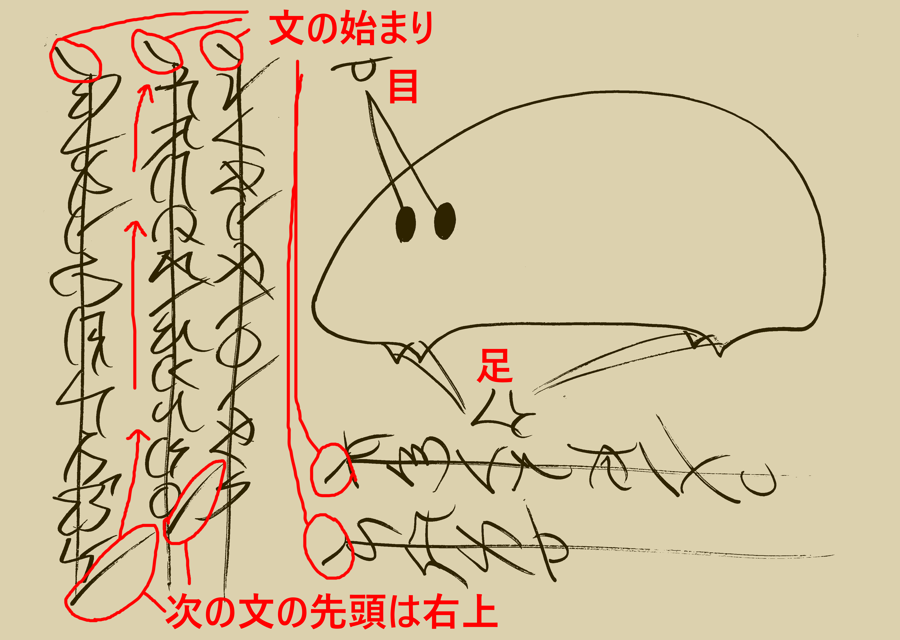

※このページの筆者は言語学に関しては全くの素人です。

人工言語を作ってみたという話です。上の画像は、その言語で書かれた記録です。新たな生物を捕まえた旨が書かれています。書かれている内容をラテン文字で表記すると以下のようになります。
sonzha mo aido ti lolie nizilo lek mikani ske ezana he pisa yat qomu pep donat zin tamo loin meyu
tito voon fen yat tamo yat kilo wen.
pipina fuf meyu tsaru yota yat naasa saa.
hishi shonp nonzoo wog.
日本語に翻訳すると次のような内容です。
1780年2月6日11時3分nizilo州mikani県ezana市にて捕獲された生物。
長さ2fuf、重さ5分の1yota。
白い体、黒い目。
文法とか
基本としてVOS型。この言語の特徴として、強調する事柄を先頭に置き、修飾語を後ろに並べていくというのがあります。例えば「貴方の手を切り落とします。」は、「切り落とす(egu) 手(fuf)
の(lok) 貴方(oer) 」になります。「私は貴方の手を切り落とします。」なら、「切り落とす(egu) 手(fuf) の(lok) 貴方(oer) 私(nar)」になります。
上の例文を逐語訳すると次のようになります。
生物(sonzha) された(mo) 捕獲(aido) 場所(ti) 州(lolie) nizilo 県(lek) mikani 市(ske) ezana 時(he) 年(pisa)
1(yat) 1000(qomu) 7(pep) 100(donat) 8(zin) 10(tamo) 月(loin) 2(meyu) 日(tito) 6(voon) 時(fen)
1(yat) 10(tamo) 1(yat) 分(kilo) 3(wen).
長さ(pipina) fuf 2(meyu) 重さ(tsaru) yota 1(yat) 分割(naasa) 5(saa).
白(hishi) 体(shonp) 黒(nonzoo) 目(wog).
表記
表意文字。読む順番を示す線の上に文字を書きます。文の始まりは斜めの線で記されます。改行時、文が続く場合は、文の終わりに次の文の先頭方向に伸びる線が記されます（下図参照）。文が一文字で完結する場合は、線が引かれません。
表意文字。一つの文字が意味を持ち、基本的に単語が一つの文字に対応します。漢字に無理矢理変換することもできなくはないです。
単語と例文
いくつかの単語と例文を示します。
| 意味 | 単語 |
| 私 | nar |
| 貴方 | oer |
| aはbである | b ya a |
| これ、この | baari |
| 所有 | lok 所有者 |
| 人 | lo |
| 手 | fuf |
| 名前 | miat |
| 切る | egu |
| 起床する | petot |
| 住む | loe |
| 夢 | utq |
| 夜 | tog |
| 跪く | danba |
| 祈る | xovo |
| 命令 | zegag 動詞 |
| 検出する | zwoka |
| 正しい | aty |
| 間違い | oty |
| エビ | ketagan |
| カニ | ketamani |
| ザリガニ | ketaseeba |
| 覆う、支配する | zoehe |
| 感情が生まれる | minaa |
| 作る | tsazhe |
| 言語、言葉 | aapowat |
| 新しい | mintoi |
| 紙 | qasu |
| 筆記用具 | zania |
| 以下 | noopison |
| 太陽 | tia |
| 上がる | senba |
| 下がる | aingo |
| 東 | tasen |
| 西 | teing |
| 南 | moin |
| 北 | suba |
| 川 | kan |
| 大河、水郷 | kanli |
| 木 | do |
| 森 | doli |
| 大きい | ulur |
| 長い | oima |
| 離れた、孤立した | ki |
| 島 | kie |
| 諸島 | kieli |
| 砂 | gan |
| 山 | tan |
| 花 | klau |
| 赤い、赤、紅 | saza |
| 暗い | me |
| 踊り | tonto |
loe ti tan nar
tsazhe aapowat mintoi
zegag danba xovo
sazakanli ya miat lok kanli baari
tonto ketamani
更新履歴
- 2023/11/30
- 一部修正
- 2023/11/26
- 記事作成